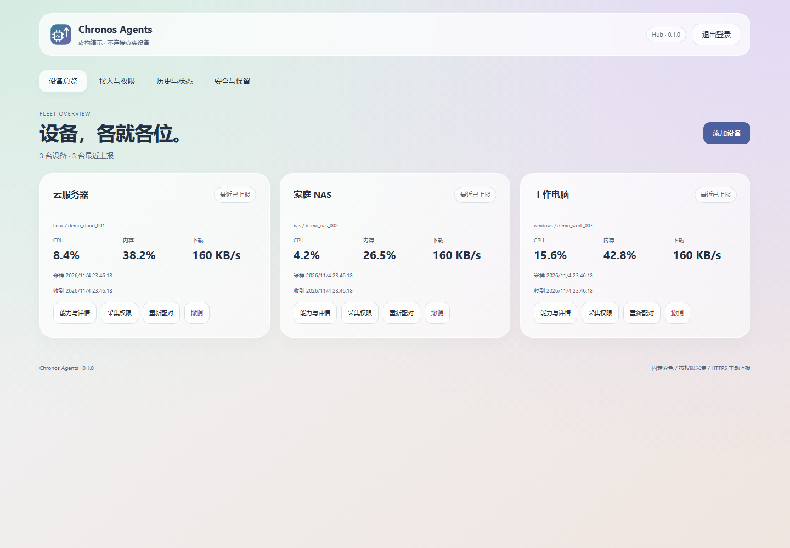
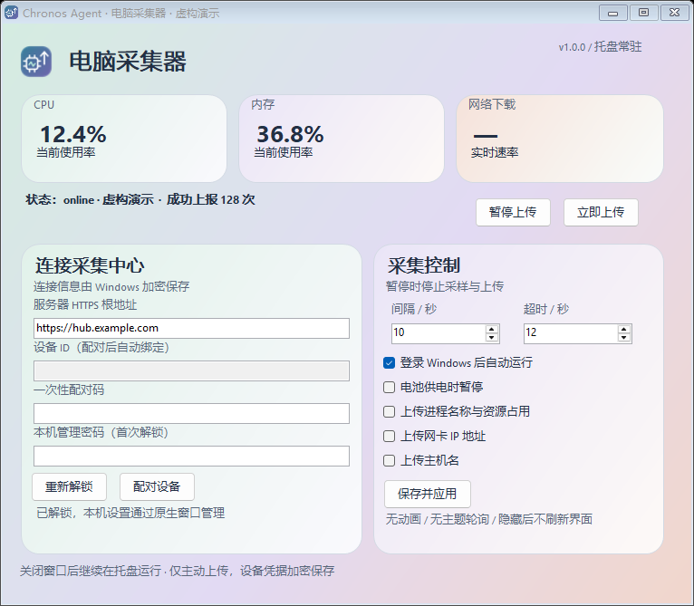

Windows
原生桌面窗口、托盘常驻。配对、暂停、间隔与隐私控制直接操作，无需本机网页。
登录自启动 · DPAPI从电脑到 NAS，从桌面到手机。
一致的协议，把状态送回自己的服务器。
1.0.0 · 原生桌面窗口 · 独立接收中心 · Apache 2.0

NATIVE WINDOWS
性能摘要、连接和采集控制清楚分区。
原生系统控件，没有 WebView，没有浏览器依赖。

NATIVE WHERE IT MATTERS
桌面就是桌面，服务就是服务。
交互与稳定，各有各的位置。
原生桌面窗口、托盘常驻。配对、暂停、间隔与隐私控制直接操作，无需本机网页。
登录自启动 · DPAPISwiftUI 原生窗口与菜单栏后台采集。可选 LaunchAgent 登录启动，管理密码进入钥匙串。
Intel / Apple Silicon · macOS 13+原生服务或 Docker，独立认证网页管理端口。只读挂载宿主资源，无需 Docker socket。
amd64 / arm64 · 非 root 容器原生 Compose App，前台实时采集；后台由 WorkManager 调度，尊重系统省电规则。
Keystore · 后台周期至少 15 分钟一次性配对、权限、撤销、历史与审计。使用自己的 HTTPS 域名部署 Hub。
SQLite · CPU 历史与能力快照只读接入 Monitoring 工作台，再由 Widgets 将状态带到桌面。
Monitoring ↗ · Widgets ↗YOUR DATA, YOUR SERVER
01HTTPS 校验证书，每台设备独立凭据；配对码短时有效且只能使用一次。
02进程、主机名与网络地址默认关闭，需要本地和中心同时允许。
03无远程命令、短信、联系人或浏览器历史。离线队列仅在内存，且有容量上限。
04不支持的指标明确标记。Android 不宣称能够读取完整整机 CPU。
THREE STEPS
从一台测试节点开始，逐个接入。
配置 HTTPS，使用私有初始化文件设置管理密码。
选择设备类型，生成十分钟内有效的配对码。
从原生窗口、网页或 Android App 配对并确认能力。
协议、单位和状态统一，系统权限决定实际可读能力。缺失数据不会假装正常。
没有。CI、模拟器和真实部署分别记录。macOS 桌面实机、Android 厂商省电与长期压力仍需验证，请阅读验证文档。
Android 使用独立签名；Windows 无商业代码签名，macOS 未公证。请从官方 Release 下载并核对 SHA256。